전자계산기기사 (2008-05-11 기출문제)
1과목: 시스템 프로그래밍
1. 어셈블리에서 어떤 기호적 이름에 상수 값을 할당하는 명령어는?
- ASSUME
- EQU
- INCLUDE
- INT
(정답률: 91%)

2. 여러 개의 프로그램을 논리에 맞게 하나로 결합하여 실행 가능한 프로그램으로 만들어 주는 것은?
- Base register
- JCL
- Linkage editor
- Accumulator
(정답률: 79%)
3. 원시 프로그램이 수행되기까지의 순서가 옳은 것은?
- compiler → loader → linkage editor
- compiler → linkage editor → loader
- loader → compiler → linkage editor
- linkage editor → compiler → loader
(정답률: 78%)
4. 매크로 프로세서의 기능에 해당하지 않는 것은?
- 매크로 정의 인식
- 매크로 정의 치환
- 매크로 정의 저장
- 매크로 호출 인식
(정답률: 76%)
5. 매크로가 3개의 기계어 명령어로 정의되어 있을 때, 주프로그램에서 매크로 호출을 3번 할 경우 확장된 명령어 수는?
- 0
- 3
- 6
- 9
(정답률: 78%)
6. 어셈블리에서 베이스 레지스터를 지정하는 명령은?
- USING
- DIV
- NEG
- BCT
(정답률: 70%)
7. 원시 프로그램을 기계어로 번역해 주는 프로그램에 해당하지 않은 것은?
- 컴파일러(Compiler)
- 어셈블러(Assembler)
- 인터프리터(Interpreter)
- 로더(Loader)
(정답률: 82%)
8. 프로그램 언어의 구문 형식을 정의하는 가장 보편적인 기법은?
- BNF
- Algorithm
- Procedure
- Flowchart
(정답률: 80%)
9. 어셈블러가 원시 프로그램을 목적 프로그램으로 번역할 때 현재의 오퍼랜드에 있는 값을 다음 명령어의 번지로 할당하는 명령어는?
- ORG
- END
- EVEN
- PAGE
(정답률: 81%)
10. 운영체제의 성능 평가 기준으로 거리가 먼 것은?
- Throughput
- Turn Around Time
- Cost
- Reliability
(정답률: 82%)
11. 일반적 로더(General Loader)에 가장 가까운 것은?
- Absolute Loader
- Compile And Go Loader
- Direct Linking Loader
- Dynamic Loading Loader
(정답률: 78%)
12. 전향 참조(Forward Reference)를 해결하기 위하여 일반적으로 사용하는 어셈블러 기법은?
- One-pass
- Two-pass
- Three-pass
- Four--pass
(정답률: 77%)
13. 절대로더를 사용하는 경우 기억장소 할당의 수행 주체는?
- 프로그래머
- 어셈블러
- 로더
- 링커
(정답률: 81%)
14. 교착 상태 발생의 필요조건이 아닌 것은?
- 상호 배제 조건
- 점유 및 대기 조건
- 선점 조건
- 환형 대기 조건
(정답률: 80%)
15. 프로세서 스케줄링(Scheduling) 중 각 프로세스에게 차례대로 일정한 시간 할당량(Time Slice) 동안 처리기를 차지하도록 하는 것은?
- FIFO
- Round Robin
- SJF
- SRT
(정답률: 80%)
16. 로더(Loader)의 기능이 아닌 것은?
- Allocation
- Link
- Compile
- Relocation
(정답률: 90%)
17. 페이지 교체 기법 중 가장 오래 동안 사용되지 않은 페이지를 교체할 페이지로 선택하는 기법은?
- FIFO
- LRU
- LFU
- SECOND CHANCE
(정답률: 80%)
18. 기억장치 배치 전략에 해당하지 않는 것은?
- First Fit
- High Fit
- Best Fit
- Worst Fit
(정답률: 89%)
19. 프로세스가 일정 시간 동안 자주 참조하는 페이지들의 집합을 의미하는 것은?
- Working Set
- Locality
- Thrashing
- Segment
(정답률: 86%)
20. 프로세스(Process)의 정의가 될 수 없는 것은?
- 실행중인 프로그램
- PCB를 가진 프로그램
- 프로세서가 할당되는 실체
- 동기적 행위를 일으키는 주체
(정답률: 93%)
2과목: 전자계산기구조
21. 인터럽트가 발생할 때의 처리순서를 옳게 나열한 것은?
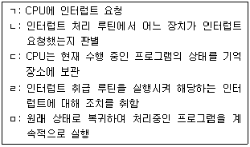
- ㄱ-ㄴ-ㄷ-ㄹ-ㅁ
- ㄱ-ㄷ-ㄴ-ㄹ-ㅁ
- ㄴ-ㄱ-ㄷ-ㄹ-ㅁ
- ㄴ-ㄷ-ㄱ-ㅁ-ㄹ
(정답률: 63%)
22. 다음 그램에서 병렬가산기 출력 F는?
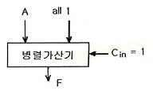
- F = A
- F = A-1
- F = A+1
- F = A+B
(정답률: 48%)
23. 10진수 8을 Excess-3 코드로 바르게 나타낸 것은?
- 1000
- 1100
- 1011
- 1001
(정답률: 80%)
24. 다음 중 채널 명령어의 구성 요소가 아닌 것은?
- 데이터 어드레스
- 입ㆍ출력 명령의 종류
- 데이터 크기
- 명령어의 작성일자
(정답률: 82%)
25. 다음 중 특정 비트를 반전시킬 때 사용하는 연산은?
- AND
- OR
- EX-OR
- MOVE
(정답률: 75%)
26. 다음 중 컴퓨터의 필수적인 구성 장치가 아닌 것은?
- 입ㆍ출력 장치
- 기억 장치
- 콘솔 장치
- 중앙 처리 장치
(정답률: 79%)
27. 멀티플렉서 채널과 셀렉터 채널의 차이로 옳은 것은?
- I/O 장치의 크기
- I/O 장치의 용량
- I/O 장치의 속도
- I/O 장치와 주기억장치의 연결
(정답률: 67%)
28. 입ㆍ출력 전송이 중앙처리장치의 레지스터를 경유하지 않고 수행되는 방법은?
- I/O Interface
- Strove control
- Interliaving
- DMA
(정답률: 75%)
29. Gray code 1111을 2진수 코드로 바꾸면?
- 1010(2)
- 1011(2)
- 0111(2)
- 1001(2)
(정답률: 48%)
30. 기억장치와 입ㆍ출력 장치의 차이점을 나타낸 것 중에서 가장 중요한 차이점은?
- 정보의 단위
- 동작의 자율성
- 착오 발생률
- 동작 속도
(정답률: 73%)
31. 다음 중 레지스터에 기억된 자료에서 특정한 위치의 비트 내용을 시험하는 방법은?
- rotate
- overlap
- move
- decoder
(정답률: 58%)
32. 소프트웨어 우선순위와 비교하여 하드웨어 우선순위 인터럽트의 특징으로 옳은 것은?
- 유연선이 있다.
- 가격이 싸다.
- 응답 속도가 빠르다.
- 우선순위는 소프트웨어로 결정한다.
(정답률: 72%)
33. RISC 방식 컴퓨터의 특징으로 가장 옳은 것은?
- 주소지정방식이 다양하다.
- 많은 수의 명령어를 가진다.
- 파이프라인 구조에 효율적이다.
- 명령어 길이가 가변적이다.
(정답률: 57%)
34. 컴퓨터에서 10진 데이터를 연산 처리할 때의 데이터 형식은?
- 10진수 형태
- 2진수 형태
- 팩(pack) 형태
- 언팩(unpack) 형태
(정답률: 55%)
35. 중앙처리장치가 모든 명령어(instruction)의 종류에 관계없이 반드시 거쳐야 하는 상태는?
- indirect cycle
- fetch cycle
- direct cycle
- interrupt cycle
(정답률: 74%)
36. 다음 중 채널의 기능이 아닌 것은?
- 입ㆍ출력 명령 지시
- 입ㆍ출력 명령 해독
- 입ㆍ출력 데이터 저장
- 데이터 입ㆍ출력 실행
(정답률: 59%)
37. 기억장치에 기억된 정보를 액세스하기 위하여 주소를 사용하는 것이 아니고, 기억된 정보의 일부분을 이용하여 원하는 정보를 찾는 것은?
- RAM
- Associative memory
- ROM
- Vitrual memory
(정답률: 70%)
38. 다음 중 memory buffer에 대한 설명으로 올바른 것은?
- memory의 용량은 증가시킨다.
- memory의 기억을 쉽게 한다.
- memory의 고장을 대비해서 구성된다.
- memory의 access에 필요한 시간을 줄인다.
(정답률: 68%)
39. 기억장치의 총 용량이 4096비트이고, 워드 길이가 16비트일 때 프로그램 카운터(PC), 주소 레지스터(AR), 데이터 레지스터(DR)의 크기로 옳은 것은?
- PC=12, AR=12, DR=16
- PC=12, AR=12, DR= 8
- PC= 8, AR= 8, DR=16
- PC=16, AR= 8, DR=16
(정답률: 53%)
40. 캐시 메모리의 기록 정책 가운데 쓰기(write) 동작이 이루어질 때마다 캐시 메모리와 주기억장치의 내용을 동시에 갱신하는 방법은?
- write-through
- write-back
- write-once
- write-all
(정답률: 64%)
3과목: 마이크로전자계산기
41. 격리(isolated)형과 메모리 맵(memory map)형 입ㆍ출력 방식에 대한 설명 중 옳지 않은 것은?
- 메모리 맵 입ㆍ출력 방식은 메모리의 번지를 I/O 인터페이스 레지스터까지 확장하여 저장하는 것이다.
- 메모리 맵 입ㆍ출력 방식은 메모리에 대한 제어신호만 필요로 하고, 메모리와 입ㆍ출력 번지 사이의 구분이 필요하다.
- 격리형 입ㆍ출력 방식은 마이크로프로세서와 메모리 및 I/O 장치를 인터페이스 할 때 메모리와 I/O 장치의 입ㆍ출력 제어신호(Read/Write)를 별도로 하여 구성하는 방법이다.
- 격리형 입ㆍ출력 방식은 I/O 인터페이스 번지와 메모리 번지가 구별된다.
(정답률: 39%)
42. 연산자(operation code)의 기능으로 옳지 않은 것은?
- 함수 연산 기능
- 주소 지정 기능
- 입ㆍ출력 기능
- 제어 기능
(정답률: 48%)
43. 2의 보수를 취하는 ALU에서 A=11110000, B=00010100일 때 A-B의 수행 후 상태 비트 S(sign) 및 Z(zero)의 값으로 옳은 것은? (단, S는 연산의 결과가 음수일 때, 그리고 Z는 연산의 결과가 "0"일 때 각각 set 된다.)
- S=0, Z=0
- S=0, Z=1
- S=1, Z=0
- S=1, Z=1
(정답률: 44%)
44. 다음 중 액세스 시간이 가장 짧은 것은?
- RAM
- ROM
- 입력장치
- 프로세서내의 레지스터
(정답률: 55%)
45. 우선순위가 높은 장치로부터 인터럽트 라인을 직렬로 연결하여, 상위의 인터럽트 요청이 없는 경우에 한하여 하위로 인터럽트 인정 신호가 넘어가는 형태의 인터럽트 우선순위 결정 방식은?
- 병렬 우선순위 방식
- 근착 우선순위 방식
- 데이지 체인 방식
- 선착 우선순위 방식
(정답률: 60%)
46. 다음 DMA(Direct Memory Access)에 대한 설명 중 틀린 것은?
- 데이터의 입ㆍ출력 전송이 직접 메모리 장치와 주변 장치 사이에서 이루어지는 인터페이스이다.
- DMA로 인하여 CPU는 기억장치의 사이클 동안에 입ㆍ출력 자료와 관계없는 프로그램을 수행할 수 있다.
- 사이클 스틸(cycle steal)이 발생하면 수행하고 있던 프로그램은 정지되며 인터럽트 처리 루틴의 수행을 위하여 CPU는 인스트럭션을 수행한다.
- 기억장치 사이클 동안에 데이터 처리를 위한 채널(channel) 사용이 요구되면 기억장치의 사용권이 DMA 인터페이스로 옮겨진다.
(정답률: 57%)
47. 인터럽트(Interrupt)가 발생했을 경우 이를 처리하기 전에 그 내용을 기억시킬 필요가 없는 것은?
- Accumulator
- State Register
- Program Counter
- Instruction Register
(정답률: 43%)
48. 입ㆍ출력 장치의 처리속도는 늦고, 중앙처리장치의 속도는 빠르기 때문에 중앙처리장치의 효율을 높이기 위해서 사용되는 장치는?
- buffer
- decoder
- multiplexer
- demultiplexer
(정답률: 75%)
49. 마이크로컴퓨터용 소프트웨어 개발 과정이 옳은 것은?
- 요구분석 → 프로그램설계 → 코딩 → 테스트 → 유지보수
- 요구분석 → 코딩 → 프로그램설계 → 유지보수 → 테스트
- 프로그램설계 → 요구분석 → 코딩 → 유지보수 → 테스트
- 코딩 → 요구분석 → 프로그램설계 → 유지보수 → 테스트
(정답률: 56%)
50. ALU에서 계산된 결과가 Overflow가 발생했는지의 유ㆍ무를 체크하기 위해서 사용되는 Gate는?
- OR Gate
- NOR Gate
- EX-OR Gate
- NAND Gate
(정답률: 53%)
51. 마이크로컴퓨터에서 중앙처리장치와 기억장치 그리고 입ㆍ출력장치 간의 데이터를 주고받기 위해 공통으로 연결되는 버스는?
- 어드레스 버스
- 데이터 버스
- 제어 버스
- 채널
(정답률: 70%)
52. 어드레스(address)가 16선(line)이고, 데이터(data)가 8선인 프로세스에서 어드레스 1선을 추가하면 전체 프로세서의 용량은 얼마나 되는가?
- 526 [KBYTE]
- 128 [KBYTE]
- 64 [KBYTE]
- 32 [KBYTE]
(정답률: 48%)
53. 어느 프로그램 중 0123번지에서 CALL A 명령이 있다. 이 CALL A를 수행한 후 stack에 기억된 값은?
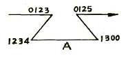
- 0123
- 0125
- 1234
- 1300
(정답률: 41%)
54. 컴퓨터를 이용하여 프로그램을 작성하여 실행 파일을 만든 후 트레이닝 키트나 target system으로 실행 파일을 전송하는 것을 무엇이라 하는가?
- Assemble
- Link
- Down Loading
- Up Loading
(정답률: 37%)
55. 다음 그림과 같은 Common Cathode 타입의 7-Segment에 숫자 “2”를 출력하기 위한 신호로 맞는 것은?
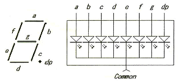
- a, b, d, e, g는 "0", c, f, dp는 "1"을 출력하고 Common 단자에 "1"을 출력
- a, b, d, e, g는 "0", c, f, dp는 "1"을 출력하고 Common 단자에 "0"을 출력
- a, b, d, e, g는 "1", c, f, dp는 "0"을 출력하고 Common 단자에 "1"을 출력
- a, b, d, e, g는 "1", c, f, dp는 "0"을 출력하고 Common 단자에 "0"을 출력
(정답률: 41%)
56. 되부름 서브루틴(recursive subrountine)을 처리하는데 유용한 자료 구조는?
- 큐(queue)
- 데크(dequeue)
- 환산 큐(circular queue)
- 스택(stack)
(정답률: 64%)
57. 인스트럭션 설계시 고려 사항이 아닌 것은?
- 인스트럭션 형태
- 주소 지정 방식
- 연산자의 종류
- 인스트럭션 제어
(정답률: 23%)
58. 마이크로프로세서 시스템을 개발하기 위한 장비로서 거리가 먼 것은?
- MDS(Microcomputer Development Software)
- Logic Analyzer
- Digital Storage Scope
- Spectrum Analyzer
(정답률: 67%)
59. 어셈블리어에서 기계어와 1대1의 대응관계가 있는 알파벳 코드는?
- 그레이 코드
- 니모닉 코드
- 오브젝트 코드
- 소스 코드
(정답률: 60%)
60. 다음 중 임베디드 시스템 개발시 디버깅하기 위한 장비는?
- JNI
- JAVA
- ZTAG
- JTAG
(정답률: 72%)
4과목: 논리회로
61. 병렬 2진 감산기를 가산기와 같은 회로로 쓸 때 필요한 회로는?
- 지연회로
- 펄스회로
- 제어회로
- 보수회로
(정답률: 56%)
62. 다음 민텀의 합형으로 표현된 불 함수를 카르노도를 이용하여 간략화한 것 중 가장 간단한 논리식은?
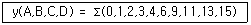
- ABC+BCD
- BC+ABD+ABC
- A'B'+A'D'+AD
- A+BCD
(정답률: 50%)
63. 다음 회로의 논리식은?
- A+B+C+D
- (ABㆍCD)'
- AB+CD
- (A+B)(C+D)
(정답률: 49%)
64. 10진수인 다음 식의 연산 값은?
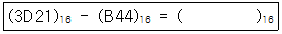
- 31DD
- 3B12
- 21DD
- 2D13
(정답률: 53%)
65. JK 플립플롭의 특성식은?
- Q(t+1) = JQ'+K'Q
- Q(t+1) = J'Q'+KQ
- Q(t+1) = JQ+KQ
- Q(t+1) = JQ+K'Q'
(정답률: 53%)
66. 그림과 같은 ECL 회로에서 출력 D는 정논리로 어떤 논리 기능을 수행하는가?
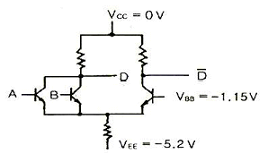
- AND
- OR
- NAND
- NOR
(정답률: 39%)
67. 다음 회로의 기능은? (단, 출력은 F 쪽이다.)
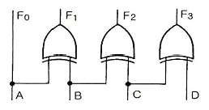
- BCD-그레이 코드 변환회로
- 아스키 코드-BCD 변환회로
- BCD-2421 변환회로
- 아스키 코드-BCD 변환회로
(정답률: 61%)
68. 그림과 같은 게이트의 출력 a, b, c, d를 순서대로 나열한 것은? (단, Z는 high impedance 상태를 나타낸다.)
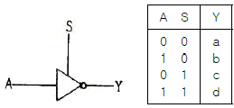
- 1, 0, 1, 0
- 1, 0, Z, Z
- Z, Z, 1, 0
- 0, 1, 0, 1
(정답률: 41%)
69. 64개의 다른 입력 조합을 받아들이기 위한 디코더의 입ㆍ출력 개수는 각각 몇 개씩인가?
- 입력: 6, 출력: 64
- 입력: 6, 출력: 32
- 입력: 5, 출력: 64
- 입력: 5, 출력: 32
(정답률: 52%)
70. 다음의 상태 변화를 가지는 COUNTER는 최소 몇 개의 플립플롭으로 구성되는가?
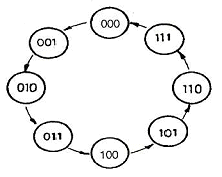
- 2개
- 3개
- 4개
- 8개
(정답률: 52%)
71. 다음 회로의 명칭은 무엇인가?
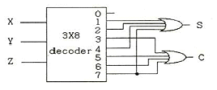
- 반가산기
- 전가산기
- 인코더
- 디코더
(정답률: 38%)
72. 8비트의 데이터 버스와 16비트의 어드레스 버스를 갖는 메모리의 용량은?
- 256[byte]
- 32[Kbyte]
- 64[Kbyte]
- 128[Kbyte]
(정답률: 40%)
73. 입력이 모두 0일 때만 출력이 1이 되는 게이트는?
- OR 게이트
- AND 게이트
- NOR 게이트
- EX-OR 게이트
(정답률: 67%)
74. 논리식 (A+B)(A+C)와 등가인 식은?
- AB+C
- AC+B
- A+BC
- A+B
(정답률: 49%)
75. 짝수 패리티 비트의 해밍(HAMMING) 코드로 0011011을 받았을 때 오류(ERROR)가 수정된 정확한 코드는?
- 0011001
- 0111011
- 0001011
- 0010001
(정답률: 27%)
76. 다음 회로의 게이트 출력 X의 값으로 옳은 것은?
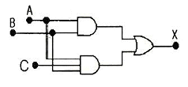
- X = ABC
- X = AC(1+B)
- X = AB
- X = A(1+C)
(정답률: 53%)
77. 3:8 디코더(decoder)를 이용하여 다음의 논리함수 f를 구현하려고 한다. 추가로 필요한 게이트는? (단, 주어진 디코더의 출력은 active-low 이다.)
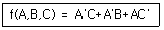
- 5 input NOR
- 3 input NOR
- 5 input NAND
- 3 input NAND
(정답률: 32%)
78. 다음의 카운터 회로는 몇 진 카운터인가? (단, 카운터 출력은 첨자 0 이 붙은 쪽이 LSB라고 본다.)
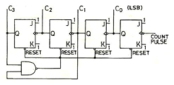
- 2
- 8
- 10
- 16
(정답률: 37%)
79. 다음 특성표(characteristic table)를 만족하는 플립플롭은?
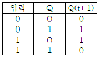
- RS 플립플롭
- D 플립플롭
- JK 플립플롭
- T 플립플롭
(정답률: 30%)
80. 전감산기의 입력 중 관계없는 것은?
- 상위에서 자리 빌림
- 하위에서 자리 올림
- 피감수
- 감수
(정답률: 55%)
5과목: 데이터통신
81. OSI 7계층 중 암호화, 코드변환, 데이터 압축 등의 역할을 담당하는 계층은?
- Data link Layer
- Application Layer
- Presentation Layer
- Session Layer
(정답률: 43%)
82. 인터네트워킹(internetworking)을 위한 장비에 해당하지 않는 것은?
- Router
- Switch
- Bridge
- Firewall
(정답률: 41%)
83. 회선 교환(circuit switching)에 대한 설명으로 옳지 않은 것은?
- 송신 스테이션과 수신 스테이션 사이에 데이터를 전송하기 전에 먼저 교환기를 통해 물리적으로 연결이 이루어져야 한다.
- 음성이나 동영상과 같이 연속적이면서 실시간 전송이 요구되는 멀티미디어 전송 및 에러 제어와 복구에 적합하다.
- 현재 널리 사용되고 있는 전화시스템을 대표적인 예로 들 수 있다.
- 송/수신 스테이션 간에 호 설정이 이루어지고 나면 항상 정보를 연속적으로 전송할 수 있는 통신로가 제공되는 셈이다.
(정답률: 35%)
84. FDM(Frequency-Division Multiplexing) 방식의 설명으로 옳지 않은 것은?
- 주파수 분할 다중화는 전화의 장거리 전송망에 도입되어 사용되어 왔다.
- 가변 파장 송신장치(tunable laser), 가변 파장 수신장치(tunable filter)를 사용하여 특정채널을 선택한다.
- 여러 신호를 전송 매체의 서로 다른 주파수 대역을 이용하여 동시에 전송하는 기술이다.
- 인접한 채널 간의 간섭을 막기 위해 일반적으로 보호대역(Guard Band)을 사용한다.
(정답률: 40%)
85. IP address에 관한 설명으로 옳지 않은 것은?
- 5개의 클래스(A, B, C, D, E)로 분류되어 있다.
- A, B, C 클래스만이 네트워크 주소와 호스트 주소 체계의 구조를 가진다.
- D 클래스 주소는 멀티캐스팅(multicasting)을 사용하기 위해 예약되어 있다.
- E 클래스는 특수 목적 주소로 공용으로 사용된다.
(정답률: 43%)
86. 전송제어문자의 내용을 기술한 것 중 옳지 않은 것은?
- STX : 본문의 개시 및 헤딩의 종료를 표시한다.
- SOH : 정보 메시지의 헤딩의 개시를 표시한다.
- ETX : 본문의 시작을 표시한다.
- SYN : 문자 동기를 유지한다.
(정답률: 62%)
87. OSI 7계층 중 Data link 계층의 프로토콜과 관련이 없는 것은?
- X.25
- HDLC
- LLC
- PPP
(정답률: 37%)
88. 토큰링 방식에 사용되는 네트워크 표준안은?
- IEEE 802.2
- IEEE 802.3
- IEEE 802.5
- IEEE 802.6
(정답률: 61%)
89. 데이터 전송을 하고자 하는 모든 단말 장치는 서로 대등한 입장에 있으며, 송신 요구를 먼저 한쪽이 송신권을 갖는 방식은?
- Contention 방식
- Polling 방식
- Selection 방식
- Routing 방식
(정답률: 37%)
90. 전송시간을 일정한 간격의 시간 슬롯(time slot)으로 나누고, 이를 주기적으로 각 채널에 할당하는 다중화 방식은?
- Code Division Multiplexing
- Wavelength Division Multiplexing
- Space Division Multiplexing
- Synchronous Time Division Multiplexing
(정답률: 60%)
91. 디지털 변조에서 디지털 데이터를 아날로그 신호로 변환시키는 것을 키잉(Keying)이라고 하며, 키잉은 기본적으로 3가지 방식이 있다. 이에 해당하지 않는 것은?
- Amplitude-Shift Keying
- Code-Shift Keying
- Frequency-Shift Keying
- Phase-Shift Keying
(정답률: 47%)
92. WAN과 LAN의 설명으로 옳지 않은 것은?
- WAN은 국가망 또는 각 국가의 공중통신망을 상호 접속시키는 국제정보통신망으로 설계 및 구축, 운용된다.
- LAN은 사용자 구내망으로 구축되며, 제한된 영역에서의 구내 사설 데이터 통신망으로 운영될 수 있다.
- LAN의 대표적인 예로는 일반 음성 전화망인 PSTN, 패킷 교환 데이터 통신망인 PSDN 등이 있다.
- WAN은 공중 통신망 사업자가 구축하고, 일반 대중 가입자들에게 보편적인 정보통신 서비스를 제공한다.
(정답률: 35%)
93. ARQ 방식 중 Go-Back-N과 Selective Repeat ARQ에 대한 설명으로 옳지 않은 것은?
- Go-Back_N은 오류 발생 이후의 모든 프레임을 재요청한다.
- Selective Repeat ARQ 버퍼는 사용량이 상대적으로 크다.
- Go-Back-N은 프레임의 송신순서와 수신순서가 동일해야 수신이 가능하다.
- Selective Repeat ARQ는 여러 개의 프레임을 묶어서 수신확인을 한다.
(정답률: 38%)
94. PCM(Pulse Code Modulation) 방식에서 PAM(Pulse Amplitude Modulation) 신호를 얻는 과정은?
- 표본화
- 양자화
- 부호화
- 코드화
(정답률: 57%)
95. TCP/IP 프로토콜의 계층 구조 중 응용계층에 해당하는 프로토콜로 옳지 않은 것은?
- ICMP
- Telnet
- FTP
- SMTP
(정답률: 56%)
96. 네트워크에 연결된 시스템은 논리주소를 가지고 있으며, 이 논리주소를 물리주소로 변환시켜 주는 프로토콜은?
- RARP
- NAR
- PVC
- ARP
(정답률: 62%)
97. 하나의 통신채널을 이용하여 데이터의 송신과 수신이 교번식으로 가능한 통신방식은?
- 반이중 통신
- 전이중 통신
- 단방향 통신
- 시분할 방식
(정답률: 46%)
98. 데이터 통신에서 오류를 검출하는 기법으로 옳지 않은 것은?
- Parity Check
- Block Sum Check
- Cyclic Redunancy Check
- Huffman Check
(정답률: 60%)
99. 데이터의 전송 중 한 비트에 에러가 발생했을 경우 이를 수신측에서 정정할 목적으로 사용되는 것은?
- P/F
- HRC
- Checksum
- Hamming code
(정답률: 60%)
100. 송신측에서 정보비트에 오류 정정을 위한 제어 비트를 가하여 전송하면 수신측에서 이 비트를 사용하여 에러 검출하고 수정하는 방식은?
- Go back-N 방식
- Selecive Repeat 방식
- Stop and Wait 방식
- Forward Error Correction 방식
(정답률: 67%)